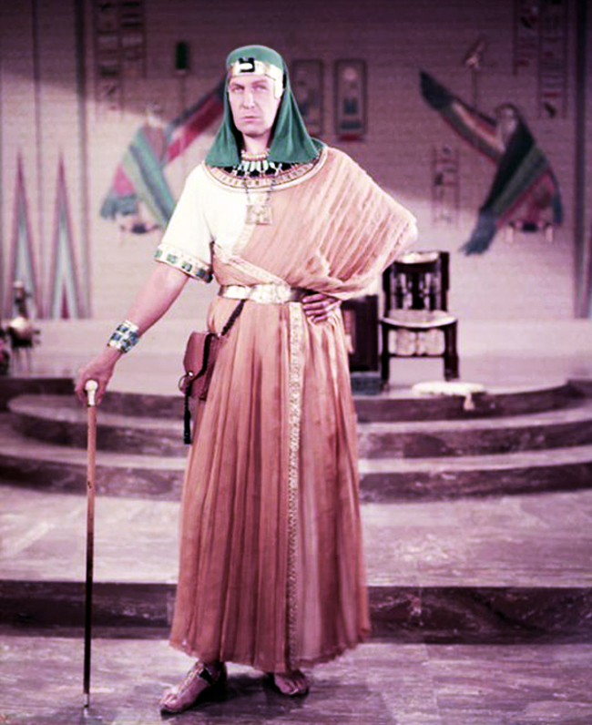
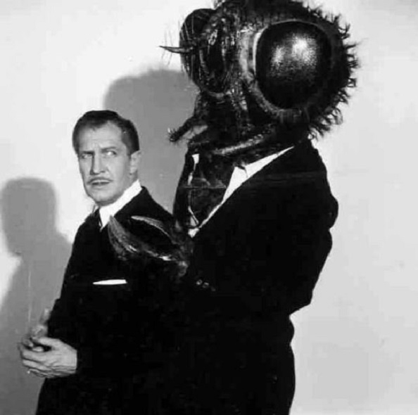
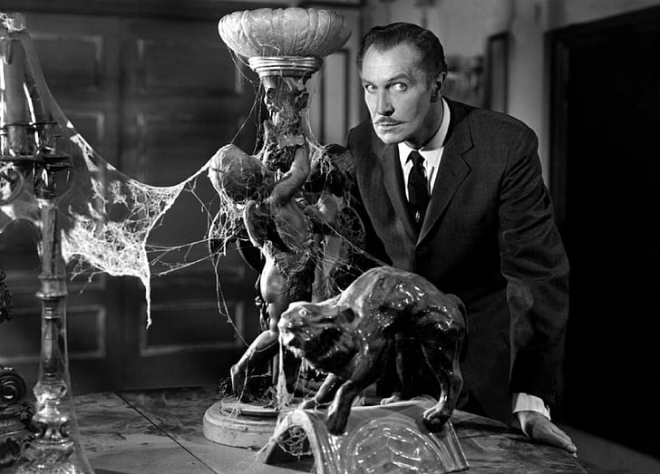
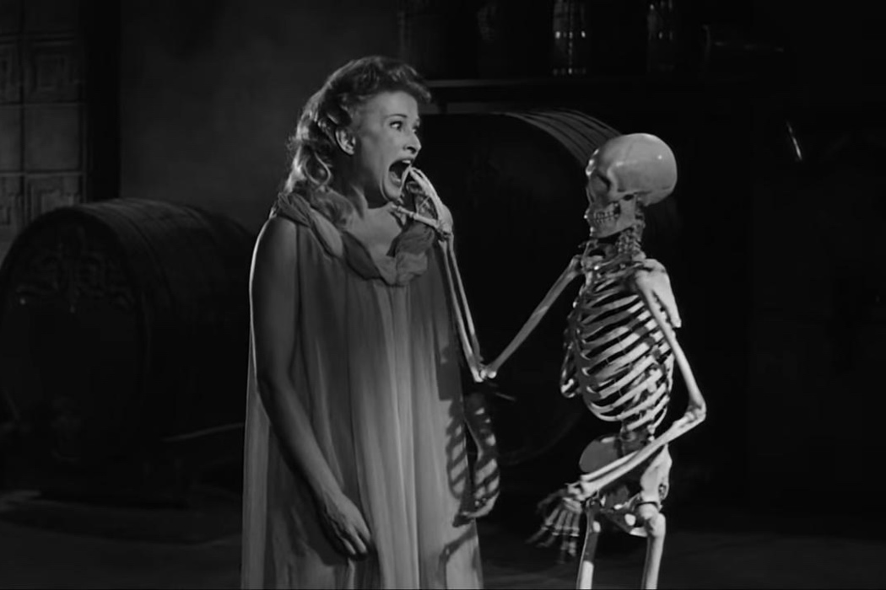

1950-1960
| Release Date | Title | Role |
|---|---|---|
| 1950 | The Baron of Arizona | James Reavis |
| 1950 | Champagne for Caesar | Burnbridge Waters |
| 1950 | Curtain Call at Cactus Creek | Tracy Holland |
| 1951 | Adventures of Captain Fabian | George Brissac |
| 1951 | His Kind of Woman | Mark Cardigan |
| 1951 | Pictura: An Adventure in Art | Narrator |
| 1952 | The Las Vegas Story | Lloyd Rollins |
| 1953 | House of Wax | Professor Henry Jarrod |
| 1954 | Dangerous Mission | Paul Adams |
| 1954 | Born in Freedom: The Story of Colonel Drake | Colonel Edwin L. Drake |
| 1954 | Casanova's Big Night | Casanova |
| 1954 | The Mad Magician | Don Gallico |
| 1955 | Son of Sinbad | Omar Khayyam |
| 1956 | Serenade | Charles Winthrop |
| 1956 | While the City Sleeps | Walter Kyne |
| 1956 | The Vagabond King | Narrator |
| 1956 | The Ten Commandments | Baka |
| 1957 | The Story of Mankind | The Devil |
| 1958 | The Fly | François Delambre |
| 1959 | House on Haunted Hill | Frederick Loren |
| 1959 | Return of the Fly | François Delambre |
| 1959 | The Big Circus | Hans Hagenfeld |
| 1959 | The Tingler | Dr. Warren Chapin |
| 1959 | The Bat | Dr. Malcolm Wells |
Notable Films
House of Wax(1953)

Vincent Price stars as a sculptor who becomes disfigured in a fire and decides to redo his destroyed wax sculptures by killing humans and dipping them into wax. Directed by Andre de Toth, this film would also be included within the Library of Congress in 2014.
The Ten Commandments(1956)
The bible story of Moses and his libration of the Hebrews in Ancient Egypt is adapted within this 1956 film. Directed by Cecil B. DeMille, with a runtime of 222 minutes, The Ten Commandments includes Price as the taskmaster and overseer of the slaves.The cultural status of this films led not only to it being included in the Library of Congress in 1999 but it has also been aired annually every year for Passover/Easter since 1973.
The Fly(1958)
Contrary to popular belief, the 1986 film starring Jeff Goldblum of the same name is not the first iteration of The Fly. The Fly (1958), directed by Kurt Neuman, adapted a short story of the same name by George Langelaan and was such a hit that it led to two sequels before being remade by David Cronenberg in 1986.
House on Haunted Hill(1959)
In this 1959 horror film directed by William Castle, Price plays an iconic role as Frederick Loren, a millionaire hosting a party in a 'haunted' house. The party isn't a normal one though as the five guests invited are promised $10,000 each if they can stay the night without dying. This film is notable, not only for the story and casting, but for it's 'Emergo' gimmick that includes a flying skelton moving over the audience.
